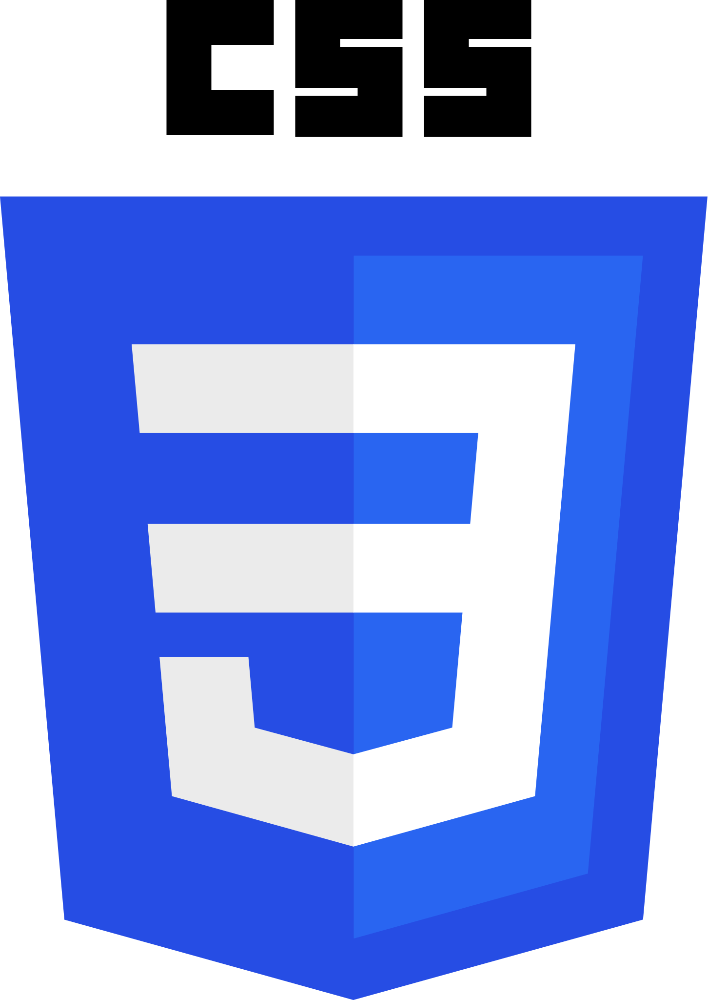

De marketer a Full Stack Developer
cómo mi trasfondo en diseño y marketing impulsan mi carrera en el mundo de la programación.
Soy una Full Stack Developer que se enorgullece de haber comenzado mi carrera en el mundo del marketing y el diseño UX/UI. Con mi formación en estas áreas, soy capaz de crear soluciones digitales que no solo funcionan bien, sino que también son atractivas y satisfacen las necesidades de los usuarios. Como desarrolladora, tengo la capacidad de crear y mantener aplicaciones web desde cero, y mi experiencia en el mundo del negocio me permite entender cómo la tecnología puede ayudar a mejorar la rentabilidad y la eficiencia de una empresa.

© copyright 2023 - Laura Díez